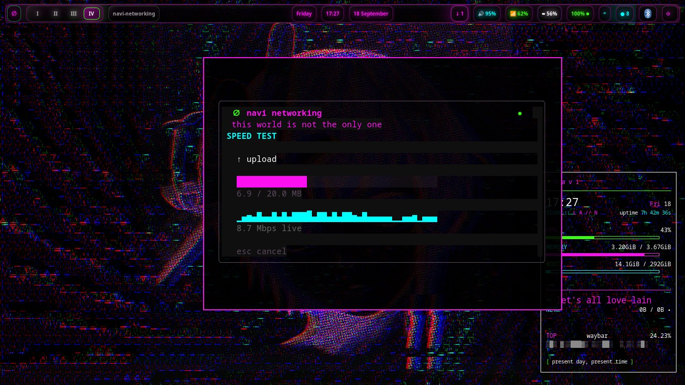
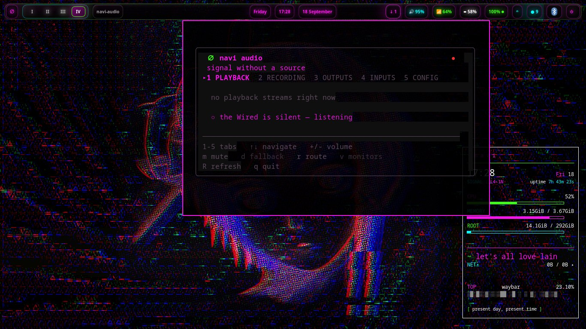
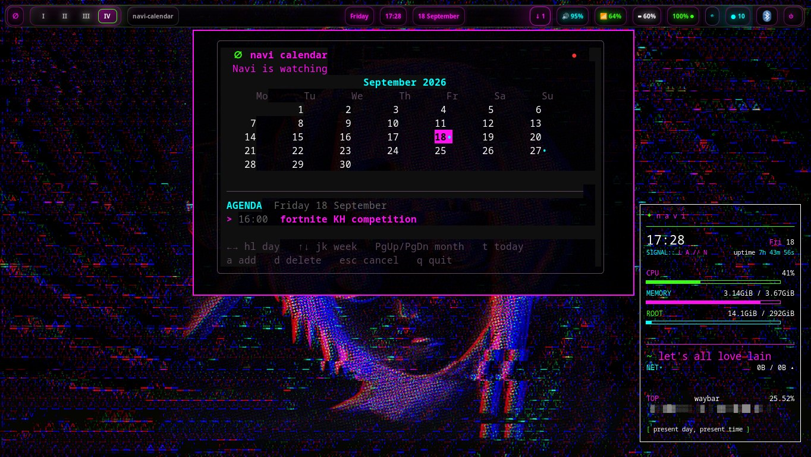
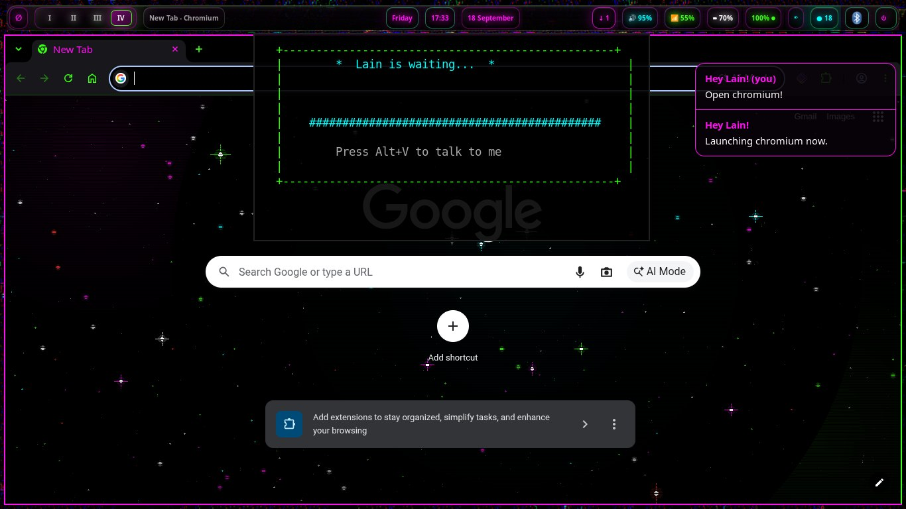

NAVI // ROLLING CHANNEL
eiri is navi's rolling channel — the coherence release, landing frequently. The Debian model, the navi way: mika stays stable on careful release tags while eiri moves fast on the branch. Same machine, same files, your call which train you're on.
HOW IT WORKS
navi-update knows two channels. stable follows release tags — that's mika, the dependable foundation. eiri tracks the eiri branch head and rolls forward whenever new work lands; the updater remembers the deployed commit and only moves when there's something new.
Switching channels asks first, then pins your choice — your customizations are preserved in both directions, because the updater redeploys around them, never over them.
And the loop closes over time: features that prove themselves on eiri graduate down into mika's stable releases. Rolling is the greenhouse; stable is the harvest.
JOIN EIRI
Already on mika? No re-install, no lost files. One command opts you into the rolling channel:
navi-update --channel eiri
It asks first, pins /etc/navi/channel, and pulls the latest eiri.
Starting from bare metal? Grab a bench ISO cut straight from the eiri branch and install it like any navi release.
Eiri ISOs are date-stamped snapshots, not versions — navi 2 eiri — 18 September 2026. mika gets version numbers; eiri gets dates. A date tells you exactly how fresh your snapshot is.
Fresh installs carry the rolling updater from the start.
WHAT'S LANDING
Coherence through ownership — one nightshadeNeon design language flowing through every layer xvoidsx builds:
ROLLING NOW
navi is unapologetically agent-native, and the store finally looks the part. The catalog ships four shelves now:
navi-extras installs, surfaced in the store: Chrome, Firefox Nightly, Brave Nightly, ani-cli, the Charm toolkit, cliamp, Telegram, Element.Still a local page, still offline-first, still one install command per card.
SEEN ON EIRI
Real screenshots from the eiri bench machine — the mods and the voice assistant, as they look right now.




THE HONEST FINE PRINT
Rolling means rolling. Eiri gets the newest work the day it lands — and occasionally the newest bugs, too. Best on a bench machine or a secondary install, not the one you need for Monday morning.
Changed your mind? One command takes you home:
navi-update --channel stable
Back on mika's release tags, customizations intact. No re-install either way — that's the whole point.